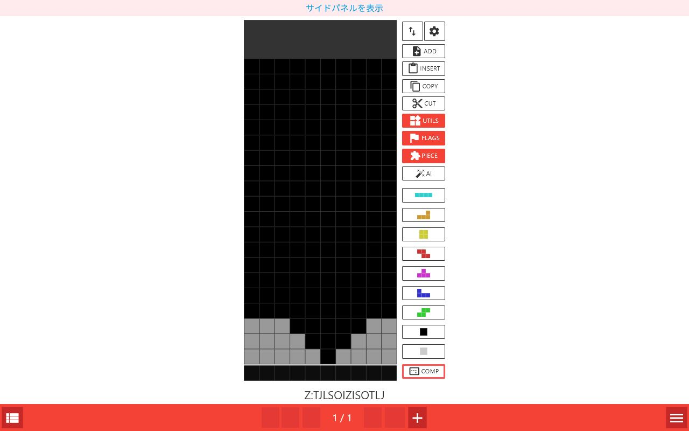
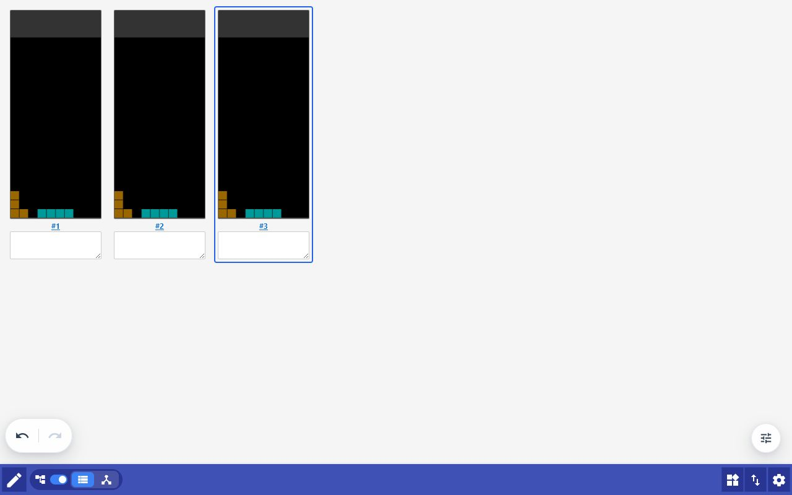
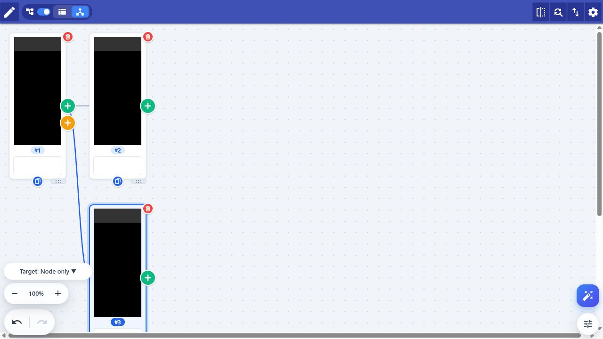
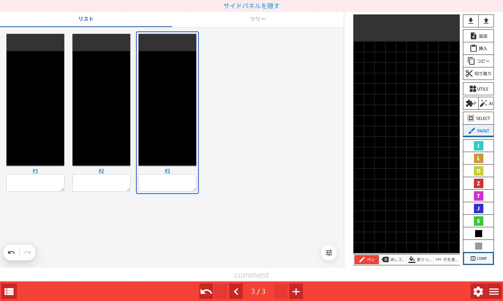
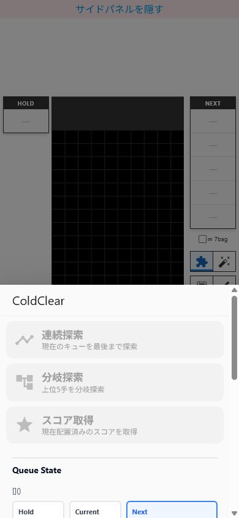

まず使ってみる
- Fumen Mobile Forkを開く。
- 編集画面で色を選び、盤面をタップまたはドラッグしてブロックを置く。
- 下部の ＋ で次のページを作る。
- 左下のリストアイコンで全ページを確認する。
- 右下のメニューから読み込み、共有、設定、Helpを開く。
4つの画面を使い分ける
Reader
完成したテト譜を閲覧します。前後ページへの移動、アニメーション再生、コメント確認に向いています。鉛筆アイコンでEditへ移動します。
Edit
盤面、ミノ、コメント、ページを編集します。通常の作業はこの画面から始めます。
List
全ページをカード形式で並べて確認します。並べ替え、コメント一括編集、画像やURLの出力に向いています。
Tree
同じ局面から複数の手順へ分岐させます。候補手、セットアップ、補完の整理に向いています。
ListとTreeは同じ一覧画面内で切り替えます。ツリーを有効にすると、ページ順はツリー構造に合わせて管理されます。PCではEditの左側へList/Treeをサイドパネル表示することもできます。
盤面を編集する

色とブロック
7色
選択した色で盤面を塗ります。色を長押しすると、対応するミノをSPAWNします。
黒
通常ブロックとして塗ります。黒を長押しすると盤面全体を黒にします。PCでは盤面の右クリックでも黒を置けます。
灰色
グレーブロックを置きます。長押しすると盤面全体をグレー化します。
COMP
グレー以外のブロックと配置中のピースを削除します。積み地形だけを残したいときに使います。
上部の編集ツール
| ボタン | できること | 長押し |
|---|---|---|
| Import/Export （上下矢印） | 取り込み、画像保存、FUMEN・URL共有、外部サイト連携をまとめたモーダルを開く | — |
| フィールド設定 （歯車） | Settingsの「フィールド」タブを直接開く | — |
| ADD | 現在ページの直後にページを追加する | — |
| INSERT | クリップボードのテト譜または盤面画像を次ページへ挿入する | 全ページを読み込み内容で置き換える |
| COPY | 現在ページをfumen v115形式でコピーする | 全ページをコピーする |
| CUT | 現在ページをコピーして削除する | 全ページを切り取る |
| UTILS | 反転、スライド、盤面変換などを開く | — |
| FLAGS | ロック、ミラー、カラーなどページ情報を設定する | — |
| PIECE | ミノの種類、向き、位置、NEXTキューを編集する | 盤面上のSPAWNミノを削除する |
| AI | Cold Clearの探索メニューを開く | — |
UTILSとFLAGS
- ALL MIRROR：全ページを左右反転します。
- SLIDE：盤面を1段上へ移動し、空いた最下段をグレーにします。
- GRAY：オンの状態でページを追加すると、ライン消去後のブロックをグレー化します。
- LOCK：ページ上のミノを固定し、次ページへ進むときにライン消去を反映します。
ページとコメントを管理する
前後へ移動
下部の左右ボタンで移動します。長押しすると最初または最後のページへジャンプします。
途中へ追加
次ページがある状態でも ＋ や INSERT を使えます。新しいページは現在ページと次ページの間に入ります。
元に戻す
Undo / Redoで直前の編集を戻したりやり直したりできます。画面モードをまたぐ編集でも履歴が維持されます。
コメント
盤面下の欄へ説明やNEXTキューを書けます。Listでは全ページを見ながら編集・一括置換できます。
Listで全ページを整理する
編集画面左下のリストアイコンから開きます。

- カードを1回選ぶと、そのカードがアクティブになります。別カードでは、同じカードをもう一度選ぶとそのページのEditへ移動します。
- #ページ番号からも対象ページへ移動できます。サイドパネルでは画面を切り替えず、右側のEditだけが更新されます。
- カードをドラッグするとページを並べ替えられます。ツリーモード中は並べ替えできません。
- コメント欄はその場で編集できます。右上の置換ボタンで全ページの文字列を一括置換できます。
- 上部の空白行を省略で盤面上部の空白を省略します。PNG/GIF出力にも反映されます。
- 上部メニューからミラー、読み込み、画像出力、共有、表示設定を実行します。
Treeで手順を分岐管理する
- List上部のツリートグルをオンにする。
- ツリーアイコンを選び、Treeへ切り替える。
- 起点にしたいノードを選び、色付きボタンで続きを作る。

追加・移動・削除
| 操作 | クリック | ノードをドラッグして重ねる |
|---|---|---|
| 緑の＋ | 選択ノードの続きとしてページを追加 | そのノードの次へ移動 |
| オレンジの＋ | 選択ノードから新しい分岐を追加 | 分岐先へ移動 |
| 青の複製 | ノードや分岐を複製 | — |
| 右上の赤い削除 | 「操作対象」で選んだ範囲を削除。直後の通知からUndo可能 | — |
- 操作対象：右下のチップで「ノードのみ」「ノードと配下」「配下のみ」を選びます。移動と削除に同じ範囲が適用されます。
- 配下のみ：ノードを残して子孫だけを移動・削除します。通常、緑ボタンは直下の子が1つのときに使えますが、移動先が葉ノードなら複数の子サブツリーも元の順序で移動できます。
- 削除：各ノード右上の赤い削除アイコンを選びます。削除後に表示される通知の元に戻すで復元できます。最後の1ページは削除できません。
- ノード選択：カードを1回選ぶとアクティブになります。別ノードでは、同じカードをもう一度選ぶとそのページのEditへ移動します。
- ツリー解除：ツリー情報が削除されるため、確認ダイアログが表示されます。
- 親ツリー追加：既存の枝につながらない独立したルートを作ります。別セットや別巡目を同じテト譜で管理するときに使います。
- ライン消去後にグレーアウト：新しいページを作るとき、消去後のブロックをグレーにします。
- アクティブノードまで：ルートから選択中ノードまでだけをPNGや共有URLとして出力します。
#TREE=... として保存されます。ツリー利用中はこの文字列を削除・書き換えないでください。他のテト譜ツールで開くと、この文字列が通常コメントとして見える場合があります。PCのサイドパネルを使う
PCではEditを開いたまま、左側にListまたはTreeを表示できます。盤面を編集しながらページ全体や分岐を確認したいときに便利です。

- 画面最上部の サイドパネルを表示 を選ぶ。Settingsの「リスト/ツリービュー」→「サイドパネルを表示（PC）」からも切り替えられます。
- リストまたはツリータブを選ぶ。
- カードやノードを選び、右側の盤面を編集する。コメントと現在ページも相互に同期します。
- Listタブ：ページ移動、コメント編集、ドラッグ並べ替えができます。ツリーモード中は並べ替えできません。
- Treeタブ：ツリーの有効化、ノード追加・分岐・複製・削除、操作対象の選択、ページ移動、ズームができます。
- 幅の変更：パネル右端の区切り線をドラッグします。区切り線をダブルクリックすると自動幅へ戻ります。
- 表示条件：PC用機能です。画面幅が1024px未満になると自動的に隠れ、幅を戻すと再表示されます。
Cold Clearで盤面を分析する
- Edit、List、Treeにある青い AI ボタンを選ぶ。
- Hold、Queue、B2B、Comboを現在の状況に合わせる。
- 探索条件を確認し、目的に合う探索を実行する。

3つの探索
連続探索
設定したキューの最後までAIの手順を追加します。まず結果を1本見たい場合に向いています。
分岐探索
各局面の上位候補をTreeへ追加します。複数の候補手を比較したい場合に使います。
スコア取得
盤面にSPAWN済みのミノを置いた状態で、その配置をAIに評価させます。自分の手の比較に使えます。
キューの入力
- Hold欄とQueue欄を選び、I O T L J S Z ボタンで入力できます。
- クリアは現在選択中のHoldまたはQueueを消します。
- +1bagはQueueへ7種1組を追加します。
- コメントにキュー形式の文字列がある場合は、その情報を読み取ります。既存の通常コメントがあるときは内容を確認してから編集してください。
探索設定
| 設定 | 意味 | 目安 |
|---|---|---|
| Hold使用 | 探索中にHoldを許可する | 実戦に合わせるならオン |
| NEXT制限 | AIへ渡す既知NEXT数を0〜30に制限する | 見えているNEXTだけで比較したいときに使用 |
| 思考時間 | 1手あたり200ms〜5s探索する | まず1s。速度優先なら短く、精度優先なら長く |
| 重み Default | 標準の評価戦略 | 通常はこちら |
| 重み Fast | Tスピンより掘りやRENを選びやすい評価戦略 | 速度・掘りを重視する比較用 |
| Speculate | 既知キューより先のピースを推測して探索する | NEXTが短い状況で候補を広げる |
| 上位候補数 | 分岐探索で残す候補数。1〜20 | 候補を増やすほど処理と結果量が増える |
Settingsを調整する
| タブ | 主な設定 |
|---|---|
| フィールド | ゴースト表示、ブロック表面、回転法則、色や盤面表示 |
| リスト・ツリー | サムネイルサイズ、カード間隔、上部の空白行を省略、ライン消去後にグレーアウト、PCサイドパネルなど |
| ショートカット | パレット、編集操作、ピース操作のキー割り当て |
| その他 | Readerのページループ、ショートカットラベル表示、言語など |
- ショートカットラベル表示：各ボタンの右下に割り当てキーを表示します。
- キーの変更：対象欄を選んでキーを押します。Backspaceで割り当てを解除できます。
- キックテーブル：「クラシック」「SRS」「SRS+」から回転法則を選びます。SRS+では180度回転も利用できます。
- サイドパネル：「サイドパネルを表示（PC）」でEdit左側のList/Treeパネルを有効にします。
- 設定の保存：ブラウザ内に保存されます。ブラウザデータを削除すると初期化されます。
覚えておくと便利な操作
| 操作 | 結果 |
|---|---|
| 前・次ページを長押し | 最初・最後のページへ移動 |
| Listアイコンを長押し | ツリーモードを有効にしてTreeへ移動 |
| メニューを長押し | 新しいテト譜を作成 |
| PIECEを長押し | 盤面上のSPAWNミノを削除 |
| 色を長押し | 対応ミノをSPAWN |
| 黒・灰・COMPを長押し | 盤面全体へ対応する処理を実行 |
| 盤面を右クリック | 黒ブロックを置く（PCのみ） |
| PIECEのキュー入替 | NEXTからカレントを取り出す、またはHoldのようにキューを更新 |
困ったとき
ページを並べ替えられない
ツリーモード中はListのドラッグ並べ替えが無効です。ツリー構造を維持したままTreeでノードを移動するか、ツリーモードを解除してください。
AIを実行できない
Queueが空でないか確認してください。スコア取得ではSPAWNミノの配置が必要です。探索中は一部の設定を変更できません。
画像を読み込めない
画像がクリップボードにコピーされていること、盤面のマス目に沿っていることを確認します。余白や文字を減らして再度範囲選択してください。
ツリーが消えた
1ページ目コメントの #TREE=... が残っているか確認します。削除後に保存や共有を行った場合、元のツリー情報は復元できないことがあります。
設定が戻った
設定はブラウザ内に保存されます。キャッシュやサイトデータの削除、別ブラウザ・別端末では引き継がれません。
共有相手と見え方が違う
共有URLを開き直し、回転法則、「上部の空白行を省略」、ツリーモードなどが意図どおりか確認してください。